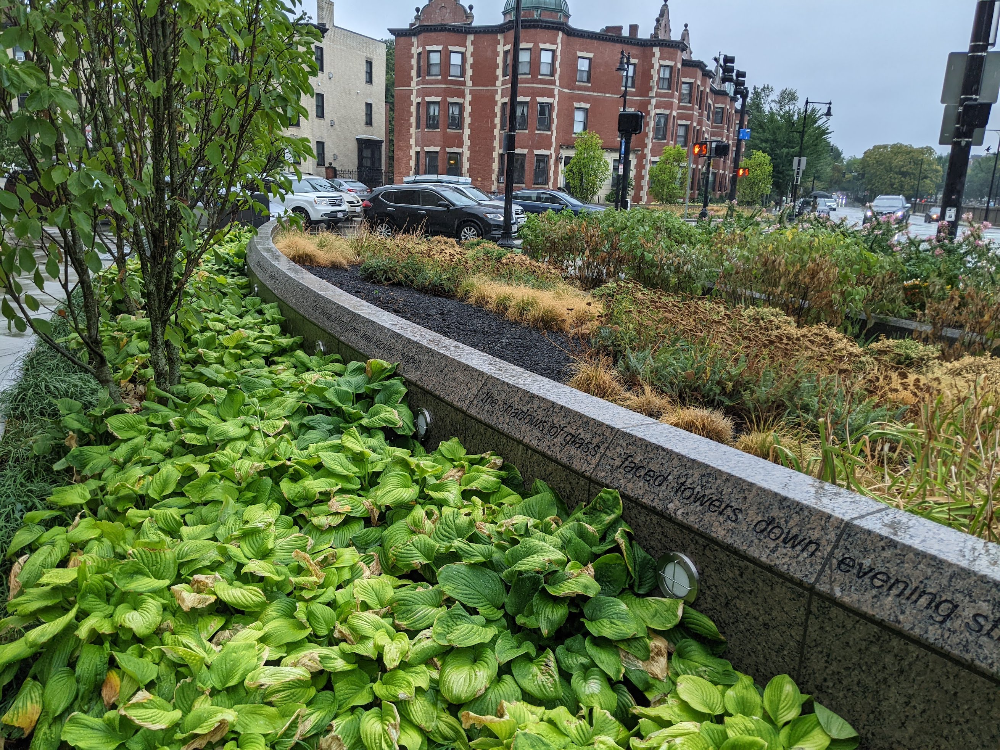
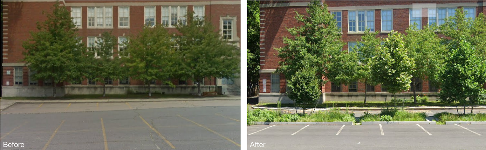

Since 2014, we have crowdsourced ideas to make Boston’s public spaces more delightful, intuitive, and beautiful through the Public Space Invitational, our annual civic design competition. This year, we are seeking proposals that use any form of art and design to help us answer foundational questions on implementation of the Green New Deal in Boston, namely questions focused on the expansion of green infrastructure, food justice, and climate resilience.
In Mayor Michelle Wu’s Planning for a Boston Green New Deal and Just Recovery, she asks us to “imagine the City of Boston leading the way on climate justice.” Addressing climate change requires bold, systemic changes to City policies in decarbonization, clean energy financing, heat abatement, stormwater mitigation, sustainable transportation expansion, and a host of other areas.
Many components of the Green New Deal are long-term goals. Many of these goals fall under the umbrella of improving and expanding green infrastructure and harnessing nature as an infrastructure system. Before we reach those goals, there are a series of questions we must answer through experimentation.
Our central questions are the following:
- How can we introduce Bostonians of all ages to green infrastructure in playful, tangible ways that spark curiosity?
- How do we foster excitement about a green future instead of wallowing in dread about the consequences of climate change?
- How can we creatively activate untapped spaces so that every inch of public space is contributing to climate resilience rather than squandering potential?
Below, we ask you to consider one of three tracks to help you focus your proposal. The tracks are provided to seed ideas — we also welcome proposals related to this year’s theme that fall outside of these two directions.
Track 1: Visualizing the Invisible Work of Green Infrastructure
Beautiful public spaces are more than just pleasing to the eye. The elements that make them aesthetically delightful — adequate tree canopy, permeable surface materials like grass or native groundcovers (instead of asphalt!), and diverse vegetation — are on the front lines of combating flooding, water pollution, and excessive heat. Existing green infrastructure is all around us and largely goes undetected – a sign that it has been well integrated into the landscape.
 Rain gardens at Audubon Circle soak up and filter stormwater.
Going forward, the City will be working toward an even more comprehensive green infrastructure network as part of Boston’s Green New Deal. We are looking for installations that draw attention to green infrastructure and educate the public about its benefits and behind-the-scenes workings, as well as shift the way we view nature in the city.
We ask you to consider a range of locations with current installations of green infrastructure. With the map below, you can find the installations on the streetscape or at schools and libraries. We also hope to highlight the role of gardens and green spaces at or adjacent to community centers.

Track 2: Supporting Community Gardens as Hubs for Green Infrastructure and Food Justice
Community gardens empower residents to make their neighborhoods greener, healthier, and more resilient. They are also vital components of Boston’s green infrastructure network. How can we find new ways to support community gardens as hubs for green infrastructure and food justice?
Here is some inspiration:
- Composed of rows of raised beds, these gardens are incredibly permeable, reducing the generation of stormwater runoff. Unfortunately, many gardens also face exorbitant water bills—if access to water is even an option. How can we improve the way gardeners harvest rainwater for their crops and leverage the gardens’ inherent permeability to enhance green stormwater management?
- How can we improve and demonstrate the cooling effects of community gardens in neighborhoods experiencing excessive heat?
For this track, you can consider any community garden or pocket park operated by The Trustees. Take a look at the map below:
Track 3: Greening City Parking Lots
The previous track prompts applicants to do interesting things with sites that are already contributing to Boston’s green infrastructure system. What about parcels of land that do more harm than good?
 Bioswales, which collect stormwater runoff through inlets in the curbs, installed in the parking lot of Washington Irving Middle School.
Asphalt parking lots are the worst of the worst, but present a great opportunity. City-owned parking lots offer a blank slate for experimenting with green interventions, such as rain gardens, bioswales, bioretention, and/or permeable paving.
As Joni Mitchell laments, “They paved paradise and put up a parking lot.” The parking lots may not return to paradise, but how can we ensure that they contribute to the budding landscape of green insfrastructure in Boston?
If you are interested in this track, you can consider any municipally-owned lot in your proposals. An interactive map of the lots can be found below:
You can apply here.
The deadline for applications is October 12th, 2022 at 5 PM.
Project Guidelines
- Proposals should aim to make green infrastructure more visible or expansive.
- We encourage applicants to propose ideas that evoke an inherent sense of wonderment and discovery.
- Selected proposals must be implemented by the end of Spring 2023
- Proposals should include a porfolio of your work.
- Proposals should include a proposed budget of up to $9,500.
More questions? Email us at invitational@newurbanmechanics.org.